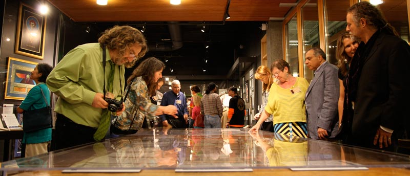

Jerry Garcia's 73rd Birthday

Jerry Garcia's 73rd Birthday at the
Santa Cruz Museum of Art and History
Honoring the Garcia Memorial Collection
August 1, 2015 | 7- 11PM
Ticket Pricing $250 per person
Limited to 73 Guests
Reception 7 p.m. | Dinner 7:45 p.m.
Experience the exhibit of the Garcia Memorial Collection; meet friends old and new,
all while enjoying live music and superb food and wine
Keynote speaker Dennis McNally, the Band's publicist,
will share some great insights into the life of Jerry
The evening’s culinary talents include:
Gourmet Appetizers by Chef Evan Rotman
Dinner by Chef Charlie Ayers of Calafia Cafe and Market A Go Go and
Chef Kimball Jones, Culinary Director at Groth Vineyards and Winery
Wines from Silver Oak, Groth Vineyards, and Steele Wines
Beer from San Francisco’s Magnolia Brewing Company
To top the evening off, desserts prepared by Chef Andrea Koweek and Chef Moaya Scheiman
of the Crisp Bake Shop in Sonoma will be served
This event is in support of the Grateful Dead Archive at the UC Santa Cruz Library
